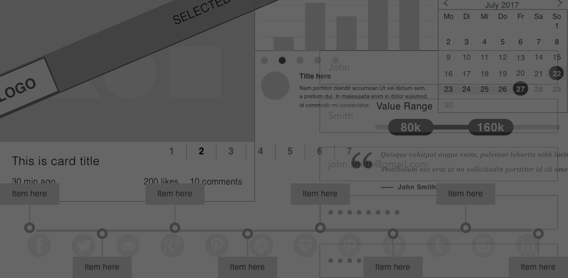

Crowd Funding is an effective way to raise money for ventures.This has been an existing project that was taking place through mail-order subscriptions and other methods. But with Internet-mediated registries, crowd funding model has becoming a challenge with various factors including trustworthy, easy to use websites, tracking statistics, etc… Next to being trustworthy, user experiences have been setting a back for the people who desire to donate. I have designed ‘Lend A Hand’, a CrowdFunding application addressing all the pain areas with improved User experience.
Crowd Funding applications allows people to donate, while User experiences is a glitch. I conducted a user survey which opened up various avenues that helped me build the application. While all the users showed interest in donating for various causes, they were equally interested in keeping track of donations and statistics like total collected amount, total needed, etc for the event/cause. On the other hand, young users complained about the time an application consumes to complete the process. It is frustrating for them as they donate smaller amounts on a regular basis.

Overall, the survey yielded results pertaining to what he/she expects a crowd funding application to provide. Based on the survey, I focused on aspects which provides more statistics and making the crowd funding application in just few clicks.
I created User personas picking users who regularly use crowd funding applications to donate. I drafted their experiences based on their Motivation, goals and frustration.
 Click to enlarge
Click to enlarge
I created user stories and flows using the results from my survey. This helped ensure that each flow was prioritized and obstacle-free. I made sure to include multiple access points, a clear start and finish and illustrated steps in sequential order. My focus was to make sure that the users can have a successful experience from start to finish.
After completing my user research, I was ready to begin creating the look and feel of my product. With the help of my user flows and user stories, I created each screen by walking through each step. Low fidelity wireframes were created within Balsamiq.
View all wireframes.For the Brand name, I brainstormed ideas through 8-minute ideas method. My goal was to create an identity that would better communicate the meaning while also confining to branding guidelines. I chose ‘Lend A Hand’ as the title of the project. My goal was to remain unique from other crowd funding applications while sustaining the meaning.

I created a website that had all the necessary information in order to donate on a recurring basis along with easy Log in and sign in pages. User can also skip the log in or sign in pages unless he decides to Donate. My profile page provided a friendly environment to become acquainted with someone in need. Also my browsing navigation was intuitive.
I chose a non-user friendly survey questionnaire application which I think I failed with this research tool. I was unable to get analytical information showcasing various details.
I would have definitely conducted more research not only through user surveys but also through analyzing my competition.
Analysis and research helped me refine any information that I come across for the product I develop. I learnt to put myself in the shoes of the user and then design my application at all stages. 99%, my own design’s perspective proved to be wrong unless I do a complete user survey and user research. This helped my perspective of design to be more User-centric. I would implement the same for all my future projects.
{kind=link}
{kind=link}
{kind=link}
{kind=link}
{kind=link}
{kind=link}
{kind=link}
{kind=link}
{kind=link}